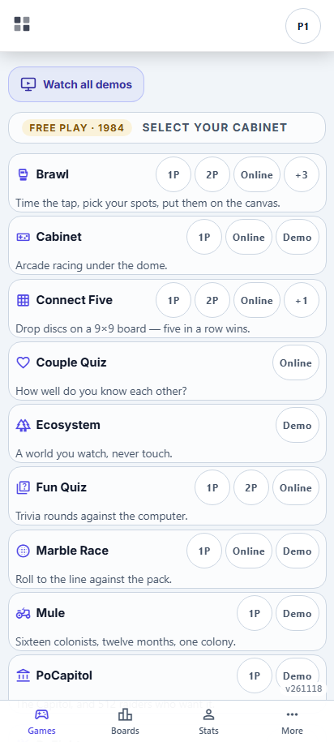
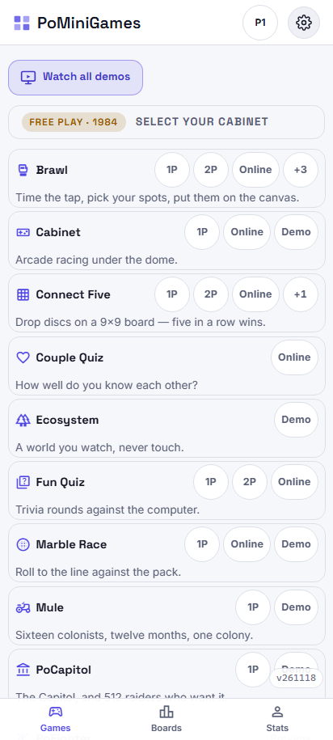
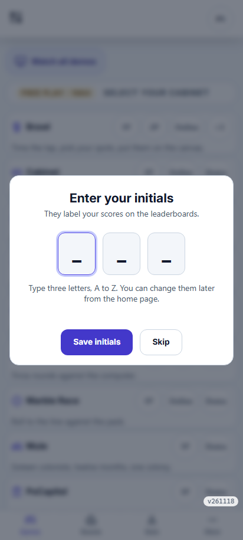
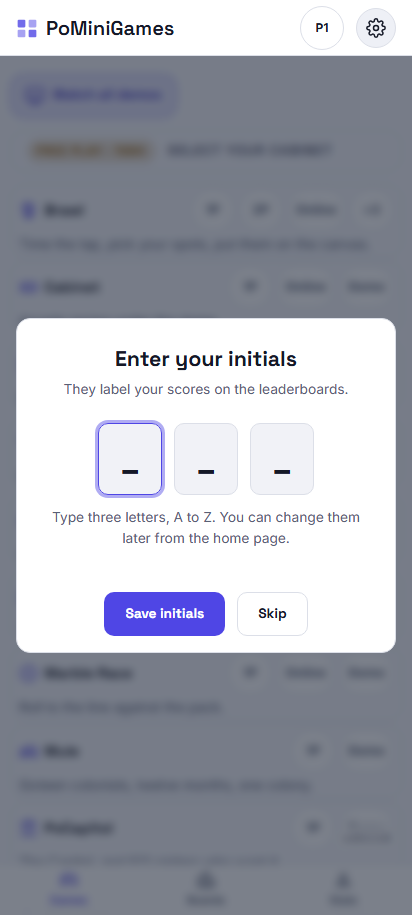
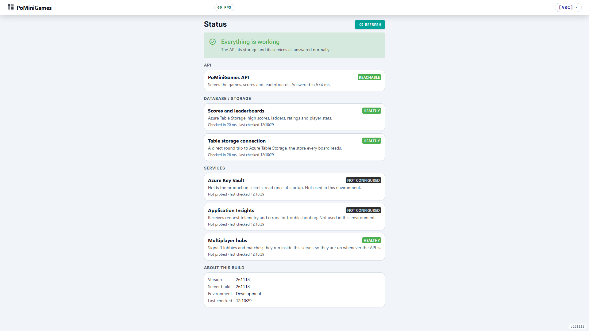
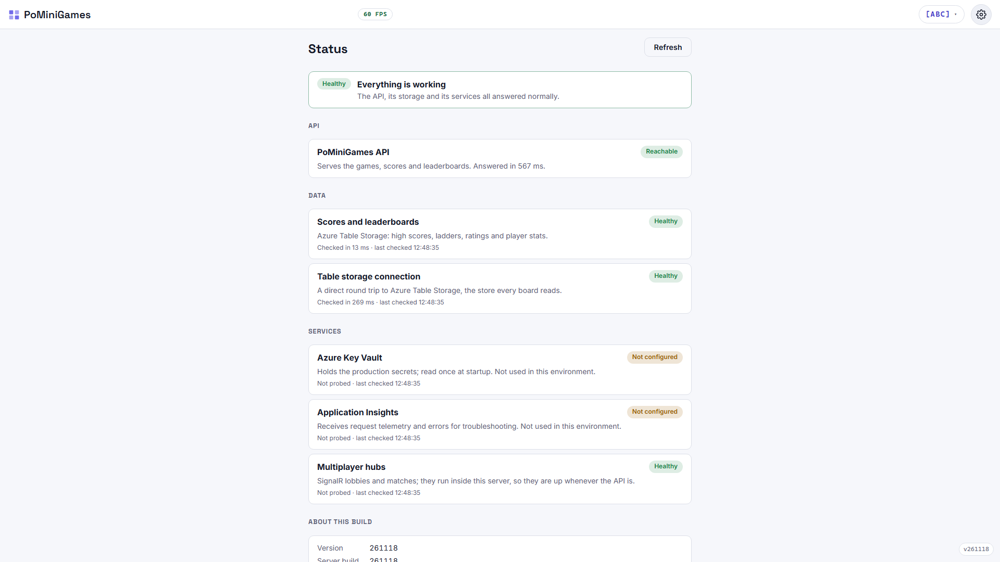
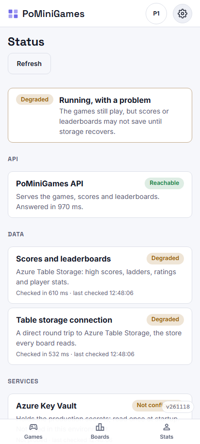
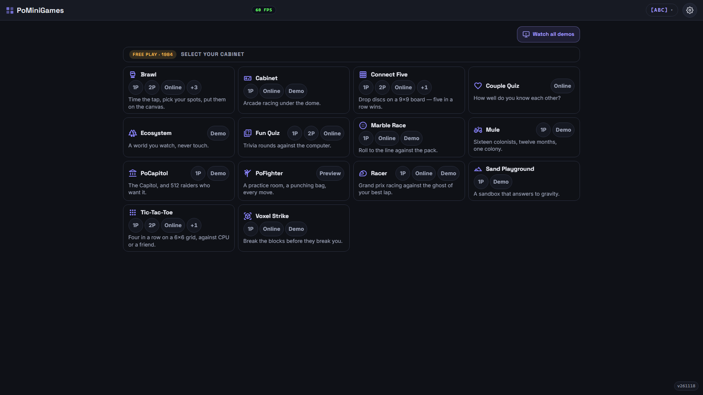
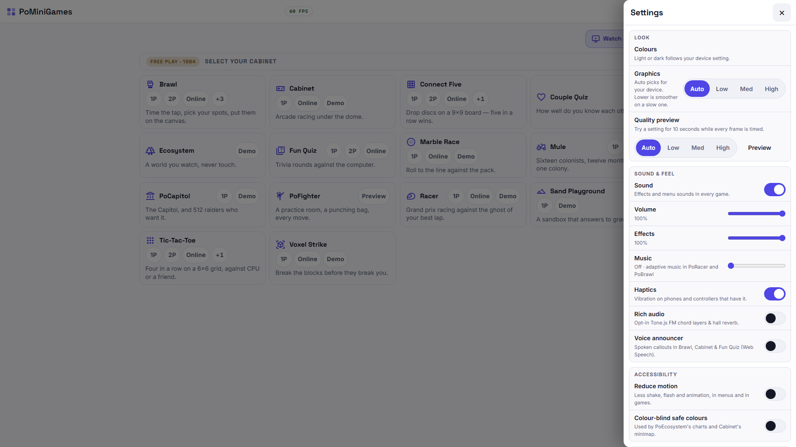
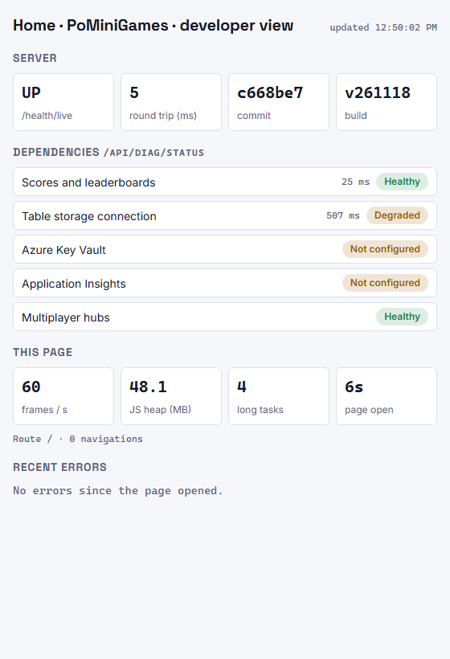

2026-11-18: the Po web standard (shared header, gear, stamp, /diag cards, Tab developer window)
Header: the app name stays visible at phone width (it was hidden below 480px); the player menu and a settings gear sit upper-right. The gear opens the settings sheet in place; /settings is the same sheet as a page.
Phone nav: Games / Boards / Stats. The "More" slot is gone: settings is the gear, Status is in the player menu.
Look: indigo accent, Inter text and Space Grotesk titles, light/dark from the device only (the Auto/Light/Dark theme row is gone).
Stamp: one .po-version (vYYMMDD, UTC date of HEAD), the same value on client and server.
/diag:po-diag__card cards with ok/warn/bad badges in API, Data and Services groups.
Initials prompt: starts below the header and waits on /diag, /health and /settings.
Tab: with nothing focused, opens /po-dev.html in its own window.
Home, phone (412x915)

Before: icon-only brand, no settings in the header ("More" in the bottom nav), system font.

After: "PoMiniGames" upper-left, P1 menu and gear upper-right, three-item bottom nav, v261118 above it.
First visit, phone

Before: the initials prompt dimmed the whole screen, header included, on every route (/diag too).

After: the header stays usable above the prompt; on /diag, /health and /settings the prompt waits until you go back to playing.
/diag, desktop (1920x1080)

Before: Radzen cards and badges, "Database / storage" group.

After: estate cards and badges, groups API / Data / Services, Not configured reads amber.

After, 412px.
Dark device, settings sheet, Tab window

After, device in dark mode: the same palette as every Po app.

After: the gear opens the sheet in place; "Colours: light or dark follows your device setting" replaces the theme switch.

After: Tab on a fresh page opens the developer window: server UP, commit, build, each dependency from /api/diag/status.